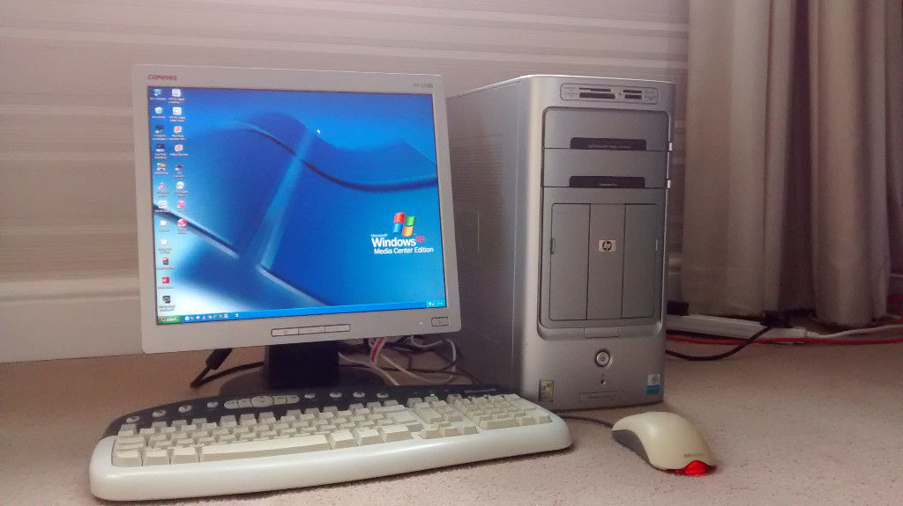

1
In a corner of the rectangular living room in my rectangular apartment was a rectangular box connected with a tangled set of thick, black, cables behind it. The box was called the ‘computer’.
2
All I had to do to use it was to press the circular button on top of the box and wait for a couple of minutes. Once it was turned on, a bright screen with a log-in box would appear.
3
Logging in was simple. I typed in a set of letters into the box, and after waiting a few seconds again, the desktop would appear. Finally, the time has come.
4
However, there was one more rectangular box waiting for me to press. The timer. My parents had placed a small desk timer next to the computer, and told us that we had to press ‘start’ as soon as we began surfing on the internet.
5
Click. The first click on the computer would begin as soon as the timer began to count down. 30 minutes was all I had, but it was everything I had.